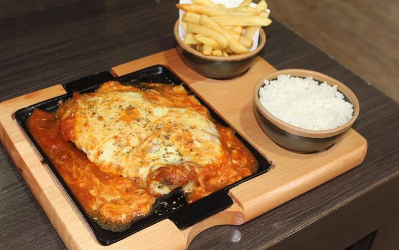
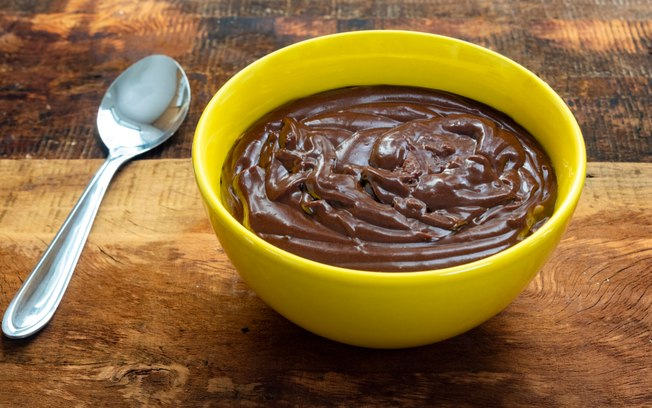
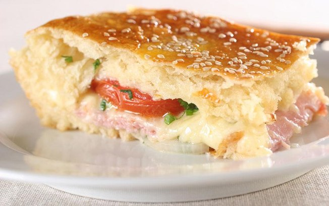

Gerador de receitas
BIFE À PARMEGIANA

Ingredientes
1 filé mignon
1 ovo
5 g de farinha de rosca
Molho sugo
5 g de queijo muçarela
5 g de queijo parmesão
Sal e pimenta-do-reino a gosto
Modo de preparo
Bata o filé mignon e tempere com sal. Em seguida, mergulhe no ovo e passe na farinha de trigo. Repita o processo. Depois, leve ao forno e asse a 180 graus por 10 minutos. Após isso, cubra o filé com muçarela e gratine. Adicione o molho de tomate e o queijo parmesão em cima do filé. Servir com arroz e batata frita.
Vídeo
Link: https://www.youtube.com/watch?v=4ULr3rsod9E
BRIGADEIRO DE MICRO-ONDAS

Ingredientes
1 lata de leite condensado
2 colheres (sopa) de chocolate em pó
2 colheres (sopa) de achocolatado em pó
1 colher (sopa) de manteiga sem sal ou margarina
Modo de preparo
Leve ao micro-ondas por 4 minutos na potência máxima, mexa bem e volte por mais 2 minutos. Verifique o ponto com uma colher, lembrando que, ao esfriar, ficará mais firme, no ponto para enrolar. Retire do refratário e coloque sobre um recipiente menor. Cubra com filme plástico para não ressecar ou criar uma crosta açucarada. Quando esfriar, enrole e decore a gosto.
Vídeo
Link: https://www.youtube.com/watch?v=fZniigc8js4
ECLIPSE
Ingredientes
25 ml de conhaque
10 ml licor de pera
5 ml de Angostura bitter
1 pimenta dedo-de-moça
Modo de preparo
Misture os ingredientes na coqueteleira e sirva em um copo com gelo. Faça pequenos cortes na pimenta para que ela libere ardência.
Vídeo
Link: https://www.youtube.com/watch?v=gGCkCCuij44
BAURU DE ASSADEIRA

Ingredientes
1 ½ xícara (chá) de leite morno
2 tabletes de fermento biológico
1 colher (chá) de açúcar
1 pitada de sal
2 ovos
1 xícara (chá) de óleo
1 xícara (chá) de margarina
3 xícaras (chá) de farinha de trigo ou o suficiente até o ponto de não grude nas mãos
Margarina e farinha de trigo para untar a assadeira
Recheio
6 fatias de queijo tipo mussarela
6 fatias de presunto
3 tomates em rodelas
½ xícara (chá) de cebola picada
2 colheres (sopa) de vinagre
Salsa e cebolinha a gosto
1 gema para pincelar
Modo de preparo
Misture o leite morno com o fermento biológico. Acrescente aos poucos os ovos, o sal, o açúcar, o óleo. Mexa tudo com as mãos até obter uma massa homogênea e que não grude nas mãos (este é o ponto certo). Caso seja necessário, adicione um pouco mais de farinha de trigo. Deixe crescer por meia hora. Divida a massa em duas partes. Abra uma parte e passe metade da xícara (chá) de margarina e dobre como um envelope e abra-a de novo com um rolo. Unte uma assadeira com margarina e farinha de trigo. Coloque essa parte da massa. Recheie com as fatias de queijo mussarela e de presunto, as rodelas de tomates, cebolas temperadas no vinagre, junte a cebolinha, a salsa. Preaqueça o forno em temperatura média (180º C). Faça com a outra metade o mesmo procedimento da margarina e das dobras. Abra-a com um rolo e cubra a assadeira. Pincele com gema antes de levar ao forno. Asse por 40 minutos aproximadamente.
Vídeo
Link: https://www.youtube.com/watch?v=RfjjkTuIiYY